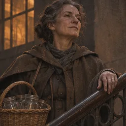
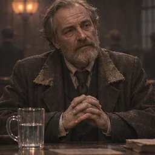

За два дня до муниципального голосования жительнице Меррова сообщают, что она уехала. Её комната по-прежнему тёплая, работа ждёт утром, а возможность получить бюллетень уже поставлена под сомнение. Ещё восемь соседей оказались в таком же положении. Расследователям предстоит выяснить, кто превратил переход через двор в отъезд из города, и сохранить людям право самим решить, идти ли на участок.

Если партия изменила план
Перед чтением вступления сверьте место героев, присутствующих людей и предметы с итогом прошлого вечера. Если условия встречи отпали, сыграйте последствия там, где находится партия. Событие по расписанию может произойти за кадром. Герои узнают о нём от тех, кто был на месте.
Вечер 7. Если житель подтвердил присутствие, но отказался голосовать
Пусть сам решит, кому сообщить об исправлении записи. До полудня группа может заняться другим адресом. В итогах отдельно укажите восстановленное право и решение оставить бюллетень неиспользованным.
Группа отказалась от задания
Список отсутствующих собирать отказываемся. Останемся у двери для тех, кто придёт возражать лично. Принимаем возражения у двери по одному. Поступили только добровольные возражения. Неявившихся мы не объявляем ни уехавшими, ни согласными.
Игроки раскрыли тайну раньше
Сверим квитанцию возвращённого входа с правкой заказчика и разыщем одного доступного подписанта. Доступные свидетельства — Квитанция возвращённого входа, Правка заказчика. В девяти письмах изменили смысл заголовка. Пометка повлияла на допуск Леи ещё до голосования. Доставляем Лее копию заголовка до следующей проверки допуска. Установлена подмена основания для списка. До полудня ещё можно подать возражение; за девятерых отряд не голосует.
Партия уступила поле
Люди под лестницей задержали нас до закрытия приёма. Берём расписку о времени подачи второго экземпляра. Сохраняем экземпляр с точным временем и подаём доказательства после полудня. Срок пропущен и результат утра не переписывается.
За десять минут до первой игры
- Откройте первый вечер, прочитайте правду мира и участников. Остальные вечера — планы, их исход решают игроки.
- Выберите пакет под фактическое число игроков. Первые три героя — готовое ядро; остальные добавляются по порядку. Возраст игрока не определяет героя.
- Согласуйте темы, длительность и сигнал паузы. Передайте игрокам только players.html; раздатки выдавайте по отдельности после указанного открытия.
- Откройте Мастерскую проекта, создайте личный черновик и импортируйте выбранный JSON через загрузку пакета. Проверьте состав и начало в предпросмотре. Запуск кампании подтверждает ведущий штатным действием.
- Откройте иллюстрацию завязки отдельно. Портреты героев входят в файл для игроков, портреты встречных — в книгу ведущего. Тактические схемы доступны в разделе карт.
Формат и темы
8 вечеров; 140 минут: 10 минут вступления, три сцены по 35 минут, 10 минут перерыва и 15 минут завершения.
Вымышленный дождливый Мерров живёт печатными бланками, ручными тележками и короткими разговорами под навесами. Все персонажи взрослые, от 21 года. Листы бойца, плута, жреца и волшебника третьего уровня обозначают земные навыки; заклинания, ячейки и сверхъестественные эффекты здесь отключены. Посох — условное обозначение трости в необязательной несмертельной стычке. Механика не моделирует настоящее право, выборы или медицину.
Мокрый камень, стыд за удобное молчание, достоинство без обязательной публичности. Оппоненты остаются людьми; политическая победа не заменяет личного выбора.
- Лишение выбора до подсчёта
- Добровольное неучастие
- Политическое посредничество
- Стыд удобной ошибки
- Частная жизнь и доказательства
Границы
- Нет реальных стран, партий, политиков и инструкций по вмешательству в реальные выборы; вся процедура условна и существует только в Меррове.
- Нет сексуальных сцен, сексуального насилия, натуралистической жестокости и несовершеннолетних персонажей. Угрозы обсуждаются заранее; сцену можно остановить или затемнить.
- Игроки не обязаны сообщать свои политические убеждения, опыт дискриминации или причины отказа. Согласие персонажа на беседу не равно согласию на публикацию.
- Нельзя принудить жителя голосовать, свидетельствовать или назвать кандидата. Отказ не штрафует игроков и открывает другой доказательственный путь.
Люди за столом
- Перед каждой сценой назначьте нового первого говорящего. Предложите устный ответ, записку или пропуск; личные политические взгляды игроков не обсуждаются без их инициативы.
- При посещении жилья сначала спросите разрешение войти и отдельно разрешение сохранить сведения. При отказе используйте общедоступное наблюдение или документальный путь, не бросок на преодоление отказа.
- Разделённые группы получают по одному решению и одному результату, затем встречаются у чайной или на указанной точке возврата. Не проводите целую сцену одной группы, пока остальные ждут.
- Три основных героя могут вести любое действие. Роли дополнительных мест передаются присутствующим, а их личные вопросы остаются необязательными. При отсутствии игрока его герой отдыхает; его персонаж не голосует за других.
- Отдельно отмечайте факт, слова свидетеля и вывод группы. Перед обвинением назовите проверяемое действие и источник; неправильный вывод можно отозвать, сохранив расследование.
- В финале каждому согласному жителю принадлежат два разных решения: восстанавливать ли допуск и пользоваться ли им. Секретный выбор кандидата никогда не становится ценой помощи.
Масштабирование группы
3 игроков
Основное трио распределяет беседу, осмотр и проверку причинности; ведущий предлагает два доступных пути за сцену. Возвращайте группы вместе после каждого результата; необязательные поручения убираются.
4 игроков
Четвёртый участник ведёт отдельный список согласий и замечает, где вывод выдают за факт. Две пары сходятся после первого найденного противоречия.
5 игроков
Добавьте роль хранителя подлинников и предложите ему решить, кому оставить независимую копию. Беседа и предметная проверка идут параллельно, затем все выбирают следующий адрес.
6 игроков
Три пары получают жильца, печатную работу и процедуру приёма; каждой доступны полноценные основания. После десяти игровых минут сведите по одному результату каждой пары без обязательного совпадения мнений.
7 игроков
Седьмой участник отмечает исключённые альтернативные объяснения и первым задаёт вопрос перед обвинением. Не добавляйте жителей ради числа игроков; расширяйте разбор последствий.
8 игроков
Две группы по четыре чередуют короткие действия; внутри каждой вращаются наблюдатель, собеседник, хранитель и критик. В финале выдайте восемь разных поручений, но любое можно объединить без потери доступа к развязке.
Первое чтение вслух
В первый день, в шесть вечера, дождь стучит по жестяному навесу чайной. Женщина кладёт между чашками плотную квитанцию. «Меня сегодня отправили домой, потому что я якобы уехала. Домой, понимаете?» Она не просит поддержать кандидата. Она просит проверить, кто решил за неё, что она больше здесь не живёт.
Правда мира · только ведущему
- Виновен политический посредник Саверий Крам, 46 лет. Он сознательно объявил девять взрослых жителей Шнурового двора выехавшими, хотя знал, что они лишь временно поменяли комнаты во время ремонта крыши.
- Крам рассчитывает уменьшить число голосующих против кандидата Фарена Кеста, который устно обещал ему должность распорядителя площади при своей победе. Предпочтения девяти неизвестны; Крам действует по собственному самоуверенному предположению. Кест не поручал исключать жителей.
- Вымышленная местная процедура допускает временную пометку выезда до проверки. Крам приложил ведомость внутренних переходов к ложной обложке об отъезде; в ответ на письменное возражение Леи подтвердил именно отъезд. Следы подготовки, доставки и возражения сохранились у разных людей.
- На третий день к полудню Крам намерен передать на участок акт закрытия выездов по этим девяти строкам. Это ещё не совершившееся событие. Подписанный акт усложнит индивидуальное восстановление допуска до закрытия участка в шесть вечера, но не меняет подсчитанные голоса и не влияет на остальных жителей.
- Лея Мольц и Мати Селт хотят сохранить возможность голосовать. Тада Верн действительно намерена воздержаться и не согласна на раскрытие домашней истории. Её решение не делает ложную пометку правдивой и не даёт героям права говорить от её имени.
- Три самостоятельных пути доказывают сознательный обман Крама: документы ремонта с его заверением; печатная проба с его содержательной правкой; след индивидуального возражения с его подтверждением. Признание посредника и показания каждого жильца не обязательны.
- Председательница Эрида Сель может приостановить одну спорную передачу по проверяемому противоречию и сохранить материалы. Возврат личного допуска требует отдельного волеизъявления жителя. Герои не получают полномочий раздать бюллетени, назначить победителя или изменить весь городской порядок.
Досье дела · только ведущему
Кто сознательно представил девять проживающих взрослых, включая Лею, выехавшими и тем самым ограничил их возможность выбрать участие до подсчёта?
Виновник: Саверий Крам.
Саверий Крам хочет обещанную Фареном должность распорядителя площади. Он самоуверенно предполагает, что жильцы двора выступят против кандидата, и пытается уменьшить их участие. Их действительные предпочтения неизвестны; устранение препятствия не обещает чьей-либо победы.
Крам сознательно выдал внутреннее переселение при ремонте за отъезд из вымышленного города, связав правдивое приложение с ложным утверждением. Он подтвердил утверждение после личного возражения. Местная условная процедура временно откладывает допуск и предусматривает будущую передачу акта; это фабула, а не описание реального избирательного порядка. Имена не исчезают, голоса не переписываются, личный выбор остаётся у жителей.
Что произошло до начала игры
- За шесть дней до открытия дела. Из-за ремонта крыши девять взрослых меняют комнаты внутри Шнурового двора. Дина составляет ведомость внутренних переходов; никто из этой группы не заявляет отъезд. Свидетели: Дина Арк, Лея Мольц, Мати Селт, Тада Верн.
- За четыре дня до открытия дела. Фарен письменно подтверждает Саверию обещание должности при победе. Поручения исключать жильцов он не даёт. Свидетели: Фарен Кест, Саверий Крам.
- За три дня до открытия дела. Дина и Крам заканчивают обход обоих корпусов. Крам подписывает ведомость и расписку, удостоверяющую занятость комнат после внутреннего перехода. Свидетели: Дина Арк, Саверий Крам, Мати Селт.
- За два дня до открытия дела. В мастерской Крам утверждает смысловую замену заголовка: вместо внутреннего перехода появляется выезд из города. Венц сохраняет пробу и подписанную правку. Свидетели: Саверий Крам, Венц Ольден.
- Накануне первого дня. Крам лично подаёт Нель ложную обложку с правдивой ведомостью в приложении. Пометка затрагивает ровно девять строк, включая Лею. Свидетели: Саверий Крам, Нель Рут.
- Первый день, 09:00. Лея сообщает Нель, что продолжает жить во дворе, и письменно просит сохранить возможность прийти на голосование. Свидетели: Лея Мольц, Нель Рут.
- Первый день, 11:00. Ознакомленный с личным возражением Крам письменно признаёт, что лично удостоверил внутренний переход Леи, но подтверждает для сверки её отъезд из города. Нель оставляет вопрос отложенным вместо предметной проверки. Свидетели: Саверий Крам, Нель Рут.
- Первый день, 12:00. Бран завершает доставку печатных экземпляров по двору. Крам подписывает приёмку, подтверждая, что все девять адресатов находятся в действующих комнатах. Лист возвращается Венцу. Свидетели: Бран Нев, Саверий Крам.
- Первый день, 16:10. Нель выдаёт Лее квитанцию об отложенном предварительном допуске. Это состоявшийся отказ в подготовительном действии; голосование ещё впереди. Свидетели: Лея Мольц, Нель Рут.
- Первый день, до открытия встречи в 18:00. Лея договаривается о встрече в чайной. Передача акта назначена к полудню третьего дня, но ещё не совершилась и может быть остановлена. Свидетели: Лея Мольц.
Независимые пути доказательства
Что видел подписант
Факты: ведомость и расписка фиксируют внутренний переход и личное присутствие Крама; обложка приписывает тем же девяти отъезд. Сопоставление устанавливает автора несовместимых утверждений и его предшествующую осведомлённость. Слова Дины помогают найти материалы, но не заменяют их. Вывод о сознательной подмене не требует печатника или согласия Леи на раскрытие личного вопроса.
Улики: Ведомость внутренних переходов; Обложка об отъезде; Расписка о завершении обхода.
Что утвердил заказчик
Факты: предназначение пробы связано со сверкой, смысловую замену подписал Крам, а более поздней приёмкой он подтвердил присутствие всех адресатов во дворе. Это исключает случайную опечатку и незнание о месте проживания. Свидетельство Венца объясняет сохранность, но достаточно разрешённых копий. Путь работает без ремонтной ведомости и без личного возражения Леи; политический мотив остаётся отдельным выводом.
Улики: Проба двойного заголовка; Правка заказчика; Лист приёмки тиража.
Что ответили живому человеку
Факты: личная просьба о допуске принята; в ответе Крам сам признаёт лично удостоверенный переход Леи между комнатами двора, но подтверждает её отъезд из города; квитанция связывает это с отложенным допуском. Его знание устанавливается собственным признанием конкретного обстоятельства внутри ответа, а не одним получением возражения. Путь доказывает сознательное противоречие хотя бы по строке Леи без ремонтной ведомости и печатной папки. Этого достаточно приостановить общий акт; вывод обо всех остальных требует отдельной проверки.
Улики: Квитанция возвращённого входа; Личное возражение Леи; Ответ посредника.
Подозреваемые
Саверий Крам
Условное назначение после победы Фарена и привычка оценивать жителей как удобных либо неудобных участников.
Три независимых комплекта связывают его подпись с изменением смысла и знанием реального проживания. Письмо о должности объясняет личную заинтересованность, но не подменяет доказательства действия.
Отсутствие подписи на ещё не переданном акте, непризнание и неизвестность предпочтений жильцов недостаточны для оправдания: ложная подача и подтверждение уже совершены. Нельзя считать будущий отказ от передачи доказательством отсутствия прошлого обмана.
Дина Арк
Ей выгодно закрыть ремонтный вопрос, а её подпись видна на приложении.
Она передала ведомость через посредника и не спросила о последующем использовании.
Ведомость внутренних переходов и расписка о завершении обхода прямо описывают занятые комнаты внутри двора. Обложка об отъезде подписана Крамом отдельно. Небрежность Дины не доказывает, что она сочинила ложный отъезд.
Нель Рут
Ей проще отложить спорную строку, чем спорить с привычным посредником.
Она действительно сохранила препятствие после личного вопроса и должна исправить свою процессуальную ошибку.
Личное возражение Леи и ответ посредника показывают, кто сообщил ложное обстоятельство после уведомления. Ошибка Нель остаётся предметом ответственности, но автором утверждения была не она.
Фарен Кест
Крам считает сокращение участия выгодным этому кандидату; Фарен обещал ему должность.
Письмо о должности создаёт основание проверить связь и задать прямой вопрос.
Письмо содержит кадровое обещание, а не поручение об отъезде. Само получение предполагаемой выгоды не устанавливает соучастие; фактические документы подписаны Крамом. Фиксированная истина: Фарен не давал такого поручения. Игроки могут оставить вопрос политической ответственности открытым.
Проверяемые ложные версии
Это всего лишь случайно испорченный заголовок печатника.
Подписанная смысловая правка заказчика и его последующая приёмка на действующих адресах исключают ошибку набора. Ошибку можно было бы исправить; Крам вместо этого подтвердил отъезд в ответе Лее.
Проверка: Проба двойного заголовка; Правка заказчика; Лист приёмки тиража; Ответ посредника.
Если Тада не хочет голосовать, вся группа согласилась считаться уехавшей.
Записка о собственном решении различает проживание и участие. Личная просьба Леи прямо показывает иной выбор. При отказе Тады от записки порядок спорной передачи объясняет то же различие без её личной истории.
Проверка: Записка о собственном решении; Личное возражение Леи; Порядок спорной передачи.
Раз Дина подписала приложение, именно она распорядилась исключить жителей.
На разных листах утверждаются разные вещи: внутренний переход и отъезд. Подпись под первым не становится подписью под вторым.
Проверка: Ведомость внутренних переходов; Обложка об отъезде; Расписка о завершении обхода.
Если расследование зашло в тупик
- Неверное обвинение Дины или Нель стоит доверия и удобного личного доступа. Отзовите конкретное утверждение в той же аудитории, затем запросите обезличенное сравнение у Эриды. Виновник остаётся Крамом; письменные источники не исчезают в наказание за ошибку.
- При потере одного оригинала используйте сохранённый отрывок, разрешённую выписку или один из двух других независимых путей. Запишите происхождение копии и ограничение её силы; ведущий не объявляет непроверенную копию подлинником.
- Если Тада, Бран, Венц или Лея не хотят выступать, не бросайте на преодоление отказа. Тада не нужна ни одному пути; печатные материалы можно получить закрытым запросом, а при полном отказе Леи остаются ремонтный и печатный пути.
- После запоздалого прихода к участку сохраните доказательства и отдельно спросите желающих о личных обращениях до шести вечера. Успех зависит от оставшегося времени и подтверждений; пропущенную возможность нельзя вернуть обещанным эпилогом.
- При отказе Фарена показать письмо раскрывайте действие без доказанного мотива. Называйте выгоду предположением до получения разрешённого источника; отсутствие признания посредника не останавливает финал.
Восемь вечеров
- 1. Человек перед строкой — Принять ограниченное поручение Леи, установить действительный характер препятствия и выбрать первый независимый путь.
- 2. Другая комната, тот же двор — Проверить реальный смысл переселения и отделить невнимательность смотрительницы от сознательного утверждения посредника.
- 3. Утверждённый заголовок — Проверить версию случайной печатной ошибки и получить независимое материальное основание без обязательного публичного свидетеля.
- 4. Право остаться дома — Различить добровольное воздержание и лишение возможности, пересобрать поручение без требования одинакового выбора всех жителей.
- 5. Ответ на присутствие — Установить причинную цепь личного препятствия и проверить, не смешала ли группа факты, слова и выводы.
- 6. Обещанное кресло — Проверить мотив, дать обвиняемому возможность ответить и сохранить различие между его действиями и предполагаемой виной окружающих.
- 7. Утро без обещанных голосов — Подготовить проверяемое ограниченное вмешательство и отдельные добровольные обращения Леи и Мати, сохранив возможность отказаться.
- 8. Дверь до полудня — При проверяемом основании остановить одну спорную передачу, сохранить доказательства и оставить личный выбор согласным жителям.
Места
Мерров
Вымышленный город каналов, крыш из жести и муниципальных досок объявлений.
Чайная под навесом
Длинный стол отделён от улицы мокрой занавеской; здесь можно поговорить без трибуны.
Шнуровый двор
Два жилых корпуса соединены бельевыми шнурами. На нескольких дверях видны следы недавнего ремонта.
Мастерская литер
Печатный станок, сушильные рамки и стол, на котором заказы лежат отдельно от проб.
Комната сверки
Небольшое помещение для предварительных вопросов о местном голосовании; посетителям выдают квитанции.
Крытая лестница
Широкая лестница между двором и верхней улицей; на площадке удобно встретиться, не заходя в жильё.
Дом собраний
Стулья расставляют для открытых бесед, а малую комнату можно попросить для закрытого разговора.
Каменный переход
Крытый переход через мелкий городской канал; скамьи и опоры оставляют несколько спокойных путей обхода.
Участок при прачечной
Бывшая прачечная с отдельными столами приёма, личных обращений и выдачи; кабины скрыты ширмами.
Лея Мольц

34 лет. Рабочий фартук под плащом, влажные рукава, квитанция в сухой жестяной коробке. Чинильщица сеток из Шнурового двора пришла попросить о проверке неприятного отказа.
Место: Чайная под навесом
Намерение
Сохранить возможность прийти на голосование, не превращаясь в лицо чужой кампании.
Собственные знания
- Она меняла комнату внутри двора во время ремонта и продолжает жить здесь.
- Утром первого дня она вручила письменное возражение Нель, а в 16:10 получила квитанцию об отложенном допуске.
- Саверий присутствовал при внутреннем переходе и разговаривал с ней у занятой комнаты.
Секрет или личное убеждение
Лея стыдится, что сначала сочла отказ собственной ошибкой и почти ушла молча.
Граница и раскрытие
Лея не знает печатной истории и замысла Саверия. Не превращать её воспоминание о встрече в знание мотива или воли всех соседей.
При согласии на частную беседу она даёт квитанцию и разрешает выписку только о себе. О предпочтении кандидата может не отвечать никогда.
Саверий Крам

46 лет. Плотный серый костюм, потёртый портфель, вежливая привычка подставлять посетителю стул. Политический посредник помогает жителям согласовывать встречи и приносит бумаги в муниципальные помещения.
Место: Дом собраний
Намерение
Стать распорядителем площади при победе Фарена Кеста и сохранить репутацию человека, который всё улаживает.
Собственные знания
- Он видел занятые комнаты и подписал ведомость внутренних переходов.
- Он заказал печать обложки об отъезде, исправил её заголовок и принял доставку на действующие адреса.
- Фарен обещал ему должность при победе; поручения исключить жильцов не давал.
- У Крама назначена передача акта закрытия выездов на третий день к полудню; он ещё может от неё отказаться.
Секрет или личное убеждение
Крам сознательно выдал переход девяти жильцов внутри двора за отъезд и подтвердил ложь после личного возражения Леи.
Граница и раскрытие
Крам не знает предпочтений девяти, тайных действий героев и будущего решения председательницы. Его вера в политическую выгоду — предположение, а не факт.
На конкретное противоречие Крам сначала отвечает, что жители всё равно бы не пришли. Признание может не последовать; материалы сохраняют силу независимо от его слов.
Тада Верн

55 лет. Сухой плащ, корзинка с пустыми банками и рука на перилах вместо протянутой ладони. Жительница двора предпочитает встречаться на лестнице и редко ходит на собрания.
Место: Крытая лестница
Намерение
Остаться дома по собственной воле и сохранить домашние обстоятельства частными.
Собственные знания
- Она живёт в том же дворе и не подавала заявления об отъезде.
- Её желание не голосовать не связано с согласием быть объявленной уехавшей.
- Она разрешает передать короткую записку о границе своего согласия без объяснения домашних причин.
Секрет или личное убеждение
Тада решила воздержаться ещё до спорной пометки и хранит датированную записку об этом решении.
Граница и раскрытие
Тада не знает виновника или состава чужих документов. Ведущий не придумывает травму, тайную партийность либо скрытое согласие, чтобы отменить её отказ.
После одного уважительного предложения она передаёт записку или просто просит уйти. Второй вариант не закрывает ни один доказательственный путь.
Дина Арк

62 лет. Медные пуговицы, ключ на шнурке и аккуратные мелкие буквы на дощечке дежурств. Смотрительница двух корпусов следила за перемещением жильцов при ремонте крыши.
Место: Шнуровый двор
Намерение
Вернуть людям спокойную жизнь и не быть назначенной виноватой за чужой заголовок.
Собственные знания
- Девять взрослых временно поменяли комнаты внутри двора.
- За три дня до начала Саверий вместе с ней видел занятые комнаты и оставил расписку об обходе.
- Ведомость внутренних переходов не содержала заявления об отъезде из города.
Секрет или личное убеждение
Дина подписала только внутренние переходы, но стесняется признать, что не попросила показать дальнейшую обложку.
Граница и раскрытие
Дина не знает печатных правок, обещанной должности и будущего решения участка. Её стыд не является признанием в избирательном обмане.
Она показывает свою часть ведомости при спокойном предметном запросе; после обвинения оставляет документы у Нель для независимого ознакомления, но прекращает домашние беседы.
Венц Ольден

41 лет. Чернильные пальцы, стеклянный козырёк над рабочим столом и выцветший фартук. Печатник хранит пробы до окончания заказа и отделяет утверждение содержания от качества печати.
Место: Мастерская литер
Намерение
Чтобы его работу не выдавали за согласие с написанным.
Собственные знания
- Крам лично заменил в пробе внутренний переход на выезд из города.
- Он подписал приёмку тиража и после её доставки подтвердил, что все девять адресатов остаются в своих дворовых комнатах.
- Проба, правка и лист приёмки находятся в его рабочей папке.
Секрет или личное убеждение
Венц заметил странную замену слов, но побоялся потерять заказ и ограничился сохранением подписанной правки.
Граница и раскрытие
Венц не знает обещания Фарена и того, что сказали на участке Лее. Нельзя выдавать его уверенность в подозрительности заказа за знание всей схемы.
Венц разрешает сверить свой заказ с публичным назначением бланка. При отказе от разговора он выдаёт документы через Нель по закрытому запросу без публичного выступления.
Эрида Сель

49 лет. Тёмный жилет, песочные часы для очередности выступлений и три отдельные папки на столе. Председательница местного участка отвечает за личные обращения и приём спорных материалов.
Место: Участок при прачечной
Намерение
Сохранить работающий участок и различать удобную общую историю от проверяемой личной ошибки.
Собственные знания
- По вымышленному порядку участка противоречивый акт можно приостановить до проверки источника.
- Личный допуск восстанавливается по просьбе самого жителя и подтверждению проживания.
- К полудню третьего дня назначен приём акта по девяти строкам; голосование закрывается в шесть вечера.
Секрет или личное убеждение
Эрида тревожится, что поспешная публичная защита учреждения может помешать ей честно признать конкретную ошибку.
Граница и раскрытие
В начале Эрида не знает обмана Крама, содержания частных писем и выбора жителей. Её решение зависит от предъявленного, а не от всеведения ведущего.
По обычной просьбе она выдаёт порядок спорной передачи. Конкретное противоречие принимает под расписку; обвинение без источника фиксирует как утверждение, а не как доказанный факт.
Бран Нев
32 лет. Короткий непромокаемый плащ, ремень для свёртков и пустые ладони во время разговора. Курьер мастерской знает дорогу к каждому корпусу двора.
Место: Каменный переход
Намерение
Получить честный расчёт за свою работу и не стать обязательным публичным свидетелем.
Собственные знания
- В полдень первого дня он доставил печатные экземпляры по действующим дворовым адресам.
- Саверий сверил доставку на месте и подписал лист приёмки.
- Подлинник листа остался у Венца; его собственные отметки лишь подтверждают вручение, а не политические взгляды.
Секрет или личное убеждение
Бран попросил сохранить лист доставки, потому что заказчик слишком настойчиво называл адресатов отсутствующими.
Граница и раскрытие
Бран не знает решения Нель, мотива Крама и намерений всех жильцов. Он не сообщает чужое содержание писем.
Он указывает, где искать лист приёмки, даже если отказывается от дальнейшей беседы. Публичные показания требуют отдельного согласия.
Нель Рут

27 лет. Простой жакет, прямой пробор и сухая тряпица рядом с подушкой для штампа. Служащая комнаты сверки принимает предварительные вопросы и выдаёт датированные ответы.
Место: Комната сверки
Намерение
Разобрать девять строк по существу, не позволив спору заслонить остальных посетителей.
Собственные знания
- Крам сам принёс обложку об отъезде накануне открытия дела.
- Лея подала возражение утром первого дня; в 11:00 Крам в ответе признал лично удостоверенный внутренний переход, но подтвердил отъезд из города.
- Ответ Лее в 16:10 означал временно отложенный допуск, а не решение о поданных голосах.
Секрет или личное убеждение
Нель слишком доверилась обложке Крама и откладывала личный вопрос Леи после формального ответа посредника.
Граница и раскрытие
Нель не знает печатного заказа, обхода двора и обещания Фарена, пока их не предъявят. Её собственная ошибка не делает её тайной сообщницей.
С согласия Леи она показывает связку её возражения и ответа. Без Леи выдаёт порядок процедуры и обезличенное противоречие между типами документов.
Мати Селт

38 лет. Ровно завязанный рабочий галстук, жестяной обеденный футляр и натёртые ладони. Наладчик из двора работает ранними сменами и заранее планирует свободное время.
Место: Шнуровый двор
Намерение
Сохранить возможность проголосовать до дневного выхода на работу, не объясняя никому свой выбор.
Собственные знания
- Он переехал на другую сторону двора, а не покинул город.
- Он согласен показать свою комнату и собственную строку ведомости без допуска к вещам соседей.
- На третий день он может прийти на участок утром либо вернуться после работы к пяти вечера.
Секрет или личное убеждение
Мати боится потерять заработок из-за долгой публичной тяжбы, хотя готов сам попросить вернуть допуск.
Граница и раскрытие
Мати не знает виновника, пока не увидит материалы. Его доступность не определяет доступность других десяти жильцов.
Договоритесь о конкретном времени и границах помощи; он сам решает, подавать ли обращение. Предпочтения кандидата не раскрывает в обмен на поддержку.
Фарен Кест

58 лет. Потёртый воротник, кружка воды и медленная речь человека, привыкшего к заседаниям. Кандидат в муниципальный совет обещает упорядочить пользование городской площадью.
Место: Дом собраний
Намерение
Выиграть выборы и окружить себя людьми, которые выполняют обещания.
Собственные знания
- Он написал Саверию письмо с обещанием должности при своей победе.
- Он не давал поручения объявлять жителей выехавшими.
- Саверий ведёт часть его организационных встреч, но не получает права выбирать за жителей.
Секрет или личное убеждение
Фарен действительно обещал Саверию должность распорядителя площади при победе и стыдится того, насколько личным стало это обещание.
Граница и раскрытие
Фарен не знает схемы выезда до предъявления. Отрицание причастности само по себе не доказательство; ведущий не даёт ему знание чужих документов или будущего результата.
По вопросу о кадровом обещании он разрешает прочесть своё письмо и может осудить метод лишь после получения основания. Такое осуждение не возвращает личный допуск автоматически.
Возможные финалы
Открытая возможность
Условия: До передачи акта группа предъявила Эриде проверяемое противоречие, сохранила источник, а Лея и/или Мати лично попросили восстановить допуск и подтвердили проживание.
Эрида приостанавливает только спорную передачу и рассматривает личные обращения. Согласные жители получают возможность выбрать: проголосовать или уйти. Тада может остаться дома. Победитель голосования не определяется расследованием.
Цена: Часть соседей продолжает избегать публичности. Проверка Крама займёт время; исправление девяти строк не означает исправления всего города.
Доказательство после полудня
Условия: Акт успел пройти, но независимые материалы сохранены и желающие жители ещё могут прийти до шести вечера.
Эрида выделяет время для отдельных исправлений; ведущий разрешает только обращения, которым хватило времени и подтверждений. Для остальных остаётся установленный факт препятствия и право добиваться разбора позднее.
Цена: Некоторые желающие могут потерять возможность голосовать сегодня. Честный отчёт называет их число и не выдаёт позднюю справедливость за возвращённый выбор.
Тишина по собственной воле
Условия: Доказательства сохранены, но жители отказались от личных обращений или публичности; группа приняла их пределы и передала только разрешённые сведения.
Можно остановить ложный общий акт документами, не назвав домашних обстоятельств. Никто не обязан воспользоваться сохранённой возможностью. Результат голосования остаётся открытым.
Цена: Крам может удержать политические связи, а расследователи не получают благодарности или громкой победы. Частные доказательства нельзя превратить в газетную сенсацию без нового согласия.
Оставленная дверь
Условия: Группа до закрытия участка не предъявила проверяемого основания и оставила вместо него неподкреплённое обвинение.
Спорная передача проходит. Ведущий отдельно фиксирует, кто хотел голосовать и кому помешали, а кто добровольно не участвовал. Сохранившиеся сведения позволяют продолжить человеческий, ограниченный разбор после финала.
Цена: Утраченная сегодняшняя возможность не возвращается эпилогом. Неверно обвинённому человеку нужны извинение и исправление сообщения; смены виновника не происходит.
Раздатки · выдавать постепенно
- Квитанция Леи — Лея разрешила прочитать свою квитанцию в первой встрече; повторный экземпляр допустим только с её согласия.
- Схема двух корпусов — Дина разрешила изучить заголовок ведомости внутренних переходов; личные строки в раздатке отсутствуют.
- Два заголовка — Группа осмотрела пробу и подписанную правку в мастерской либо получила разрешённую выписку через Нель.
- Граница Тады — Тада добровольно передала записку. При её отказе раздатка остаётся закрытой до конца кампании.
- Вопрос и ответ — Лея разрешила прочитать связку своего возражения и ответа посредника.
- Три разных решения — Эрида или Нель объяснила вымышленный порядок и предложила участникам сверить понимание.
Как читать игровые проверки
Проверки характеристик и навыков, переговоры, часы и последствия из книги разрешает ведущий. Они не являются дополнительными автоматическими правилами приложения. Улики доступны без обязательного успешного броска. Подготовленные встречи начинаются только по решению ведущего; исходы и эпилоги заранее не записаны.
Когда свидетель готов говорить
Знание NPC не означает готовность раскрыть его при первом вопросе. В пакете свидетельства закрыты; ведущий использует условия раскрытия в карточке NPC и штатные действия для согласованных открытий. Независимые предметные улики доступны через осмотр, поэтому отказ свидетеля не блокирует расследование.
Статус подготовки
Авторская кампания подготовлена отдельным агентом, запрошенным как GPT-6 Astra / max. Проверки пакетов и игровых границ описаны в verification.json и общем отчёте. Живой плейтест с людьми ещё не проведён. Локальная папка с исходниками и книгой предназначена ведущему.